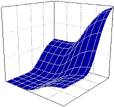
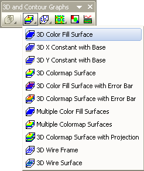

Farbiges Oberflächendiagramm
Color-Fill-Surface

Datenanforderungen
- Arbeitsblatt: Wählen Sie mindestens eine Z-Spalte aus (oder einen Bereich aus mindestens einer Z-Spalte). Falls die Z-Spalte verbundene XY-Spalten besitzt, werden die XY-Spalten verwendet; ansonsten werden die XY-Standardwerte des Arbeitsblatts verwendet.
oder
- Matrix: Eine Matrix von Z-Werten
Diagramm erstellen
Aktivieren Sie das Matrixblatt oder wählen Sie die gewünschten Daten im Arbeitsblatt aus.
Wählen Sie im Menü .
oder
Klicken Sie auf die Schaltfläche 3D-farbige Oberfläche der Symbolleiste 3D- und Konturdiagramme.

Vorlage
- glMESH.OTP (OpenGL)
- MESH.OTP
(installiert im Origin-Programmordner)
Hinweise
Die Z-Werte legen eine Oberfläche von X- und Y- Gitternetzlinien mit Füllfarben im Vorder- und Hintergrund der Oberfläche fest.